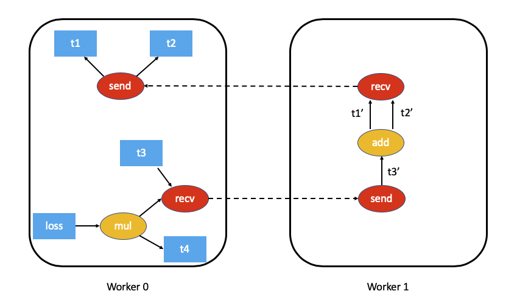
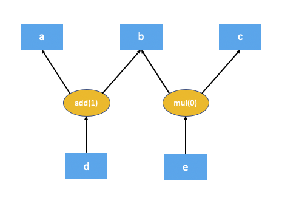
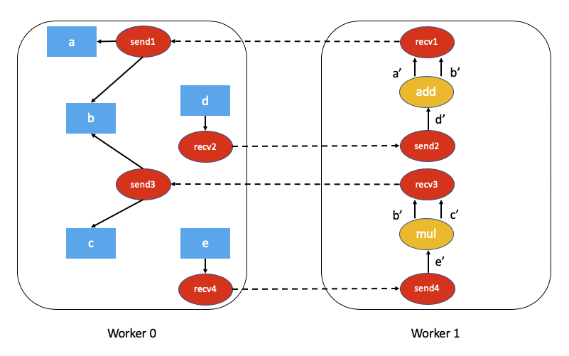
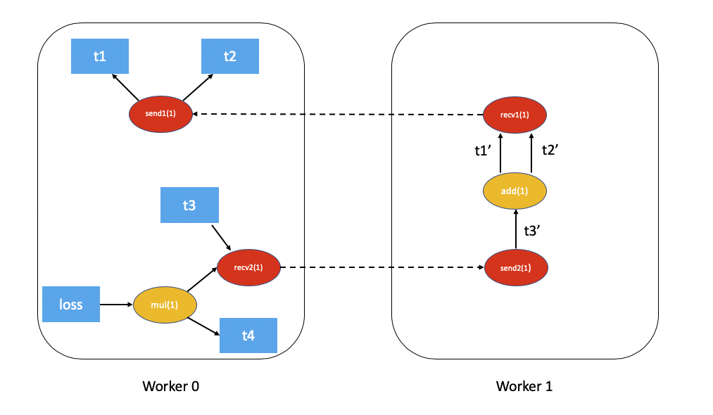

Distributed Autograd Design#
Created On: Nov 12, 2019 | Last Updated On: Sep 03, 2021
This note will present the detailed design for distributed autograd and walk through the internals of the same. Make sure you’re familiar with Autograd mechanics and the Distributed RPC Framework before proceeding.
Background#
Let’s say you have two nodes and a very simple model partitioned across two
nodes. This can be implemented using torch.distributed.rpc as follows:
import torch
import torch.distributed.rpc as rpc
def my_add(t1, t2):
return torch.add(t1, t2)
# On worker 0:
t1 = torch.rand((3, 3), requires_grad=True)
t2 = torch.rand((3, 3), requires_grad=True)
# Perform some computation remotely.
t3 = rpc.rpc_sync("worker1", my_add, args=(t1, t2))
# Perform some computation locally based on remote result.
t4 = torch.rand((3, 3), requires_grad=True)
t5 = torch.mul(t3, t4)
# Compute some loss.
loss = t5.sum()
The main motivation behind distributed autograd is to enable running a backward
pass on such distributed models with the loss that we’ve computed and
record appropriate gradients for all tensors that require gradients.
Autograd recording during the forward pass#
PyTorch builds the autograd graph during the forward pass and this graph is used to execute the backward pass. For more details see How autograd encodes the history.
For distributed autograd, we need to keep track of all RPCs during the forward
pass to ensure the backward pass is executed appropriately. For this purpose,
we attach send and recv functions to the autograd graph when we perform
an RPC.
The
sendfunction is attached to the source of the RPC and its output edges point to the autograd function for the input tensors of the RPC. The input for this function during the backward pass is received from the destination as the output of the appropriaterecvfunction.The
recvfunction is attached to the destination of the RPC and its inputs are retrieved from operators executed on the destination using the input tensors. The output gradients of this function are sent to the source node to the appropriatesendfunction during the backward pass.Each
send-recvpair is assigned a globally uniqueautograd_message_idto uniquely identify the pair. This is useful to look up the corresponding function on a remote node during the backward pass.For RRef, whenever we call
torch.distributed.rpc.RRef.to_here()we attach an appropriatesend-recvpair for the tensors involved.
As an example, this is what the autograd graph for our example above would look like (t5.sum() excluded for simplicity):

Distributed Autograd Context#
Each forward and backward pass that uses distributed autograd is assigned a
unique torch.distributed.autograd.context and this context has a
globally unique autograd_context_id. This context is created on each node
as needed.
This context serves the following purpose:
Multiple nodes running distributed backward passes might accumulate gradients on the same tensor and as a result the
.gradfield of the tensor would have gradients from a variety of distributed backward passes before we have the opportunity to run the optimizer. This is similar to callingtorch.autograd.backward()multiple times locally. In order to provide a way of separating out the gradients for each backward pass, the gradients are accumulated in thetorch.distributed.autograd.contextfor each backward pass.During the forward pass we store the
sendandrecvfunctions for each autograd pass in this context. This ensures we hold references to the appropriate nodes in the autograd graph to keep it alive. In addition to this, it is easy to look up the appropriatesendandrecvfunctions during the backward pass.In general we also use this context to store some metadata for each distributed autograd pass.
From the user’s perspective the autograd context is setup as follows:
import torch.distributed.autograd as dist_autograd
with dist_autograd.context() as context_id:
loss = model.forward()
dist_autograd.backward(context_id, loss)
It is important to note that your model’s forward pass must be invoked within
the distributed autograd context manager, as a valid context is needed in
order to ensure that all send and recv functions are stored properly
to run the backward pass across all participating nodes.
Distributed Backward Pass#
In this section we outline the challenge of computing dependencies accurately during a distributed backward pass and describe a couple of algorithms (with tradeoffs) on how we can execute a distributed backward pass.
Computing dependencies#
Consider the following piece of code being run on a single machine
import torch
a = torch.rand((3, 3), requires_grad=True)
b = torch.rand((3, 3), requires_grad=True)
c = torch.rand((3, 3), requires_grad=True)
d = a + b
e = b * c
d.sum.().backward()
This is what the autograd graph for the code above would look like:

The first step the autograd engine performs as part of the backward pass is
computing the number of dependencies for each node in the autograd graph. This
helps the autograd engine know when a node in the graph is ready for execution.
The numbers in brackets for add(1) and mul(0) denote the number of
dependencies. As you can see, this means during the backward pass the add
node needs 1 input and the mul node doesn’t need any inputs (in other
words doesn’t need to be executed). The local autograd engine computes these
dependencies by traversing the graph from the root nodes (d in this case).
The fact that certain nodes in the autograd graph might not be executed in the backward pass poses a challenge for distributed autograd. Consider this piece of code which uses RPC.
import torch
import torch.distributed.rpc as rpc
a = torch.rand((3, 3), requires_grad=True)
b = torch.rand((3, 3), requires_grad=True)
c = torch.rand((3, 3), requires_grad=True)
d = rpc.rpc_sync("worker1", torch.add, args=(a, b))
e = rpc.rpc_sync("worker1", torch.mul, args=(b, c))
loss = d.sum()
The associated autograd graph for the code above would be:

Computing dependencies of this distributed autograd graph is much more challenging and requires some overhead (either in terms of computation or network communication).
For performance sensitive applications we can avoid a
lot of overhead by assuming every send and recv function are valid as
part of the backward pass (most applications don’t perform RPCs that aren’t
used). This simplifies the distributed autograd algorithm and is much more
efficient, but at the cost that the application needs to be aware of the
limitations. This algorithm is called the FAST mode algorithm and is
described in detail below.
In the general case it might not be necessary that every send and recv
function is valid as part of the backward pass. To address this, we have
proposed a SMART mode algorithm which is described in a later section.
Please note that currently, only the FAST mode algorithm is implemented.
FAST mode algorithm#
The key assumption of this algorithm is that each send function has a
dependency of 1 when we run a backward pass. In other words, we assume we’ll
receive a gradient over RPC from another node.
The algorithm is as follows:
We start from the worker which has the roots for the backward pass (all roots must be local).
Lookup all the
sendfunctions for the current Distributed Autograd Context.Compute dependencies locally starting from the provided roots and all the
sendfunctions we retrieved.After computing dependencies, kick off the local autograd engine with the provided roots.
When the autograd engine executes the
recvfunction, therecvfunction sends the input gradients via RPC to the appropriate worker. Eachrecvfunction knows the destination worker id since it is recorded as part of the forward pass. Therecvfunction also sends over theautograd_context_idandautograd_message_idto the remote host.When this request is received on the remote host, we use the
autograd_context_idandautograd_message_idto look up the appropriatesendfunction.If this is the first time a worker has received a request for the given
autograd_context_id, it will compute dependencies locally as described in points 1-3 above.The
sendfunction retrieved in 6. is then enqueued for execution on the local autograd engine for that worker.Finally, instead of accumulating the gradients on the
.gradfield of the Tensor, we accumulate the gradients separately per Distributed Autograd Context. The gradients are stored in aDict[Tensor, Tensor], which is basically a map from Tensor to its associated gradient and this map can be retrieved using theget_gradients()API.
As an example the complete code with distributed autograd would be as follows:
import torch
import torch.distributed.autograd as dist_autograd
import torch.distributed.rpc as rpc
def my_add(t1, t2):
return torch.add(t1, t2)
# On worker 0:
# Setup the autograd context. Computations that take
# part in the distributed backward pass must be within
# the distributed autograd context manager.
with dist_autograd.context() as context_id:
t1 = torch.rand((3, 3), requires_grad=True)
t2 = torch.rand((3, 3), requires_grad=True)
# Perform some computation remotely.
t3 = rpc.rpc_sync("worker1", my_add, args=(t1, t2))
# Perform some computation locally based on remote result.
t4 = torch.rand((3, 3), requires_grad=True)
t5 = torch.mul(t3, t4)
# Compute some loss.
loss = t5.sum()
# Run the backward pass.
dist_autograd.backward(context_id, [loss])
# Retrieve the gradients from the context.
dist_autograd.get_gradients(context_id)
The distributed autograd graph with dependencies would be as follows (t5.sum() excluded for simplicity):

The FAST mode algorithm applied to the above example would be as follows:
On
Worker 0we start from the rootslossandsend1to compute dependencies. As a resultsend1is marked with a dependency of 1 andmulonWorker 0is marked with a dependency of 1.Now, we kickoff the local autograd engine on
Worker 0. We first execute themulfunction, accumulate its output in the autograd context as the gradient fort4. Then, we executerecv2which sends the gradients toWorker 1.Since this is the first time
Worker 1has heard about this backward pass, it starts dependency computation and marks the dependencies forsend2,addandrecv1appropriately.Next, we enqueue
send2on the local autograd engine ofWorker 1, which in turn executesaddandrecv1.When
recv1is executed it sends the gradients over toWorker 0.Since
Worker 0has already computed dependencies for this backward pass, it just enqueues and executessend1locally.Finally, gradients for
t1,t2andt4are accumulated in the Distributed Autograd Context.
SMART mode algorithm#
Full details of this algorithm are still in the works, but for the general idea you can refer to Distributed Autograd Algorithm Smart mode section in the RFC.
Distributed Optimizer#
The DistributedOptimizer operates as follows:
Takes a list of remote parameters (
RRef) to optimize. These could also be local parameters wrapped within a localRRef.Takes a
Optimizerclass as the local optimizer to run on all distinctRRefowners.The distributed optimizer creates an instance of the local
Optimizeron each of the worker nodes and holds anRRefto them.When
torch.distributed.optim.DistributedOptimizer.step()is invoked, the distributed optimizer uses RPC to remotely execute all the local optimizers on the appropriate remote workers. A distributed autogradcontext_idmust be provided as input totorch.distributed.optim.DistributedOptimizer.step(). This is used by local optimizers to apply gradients stored in the corresponding context.If multiple concurrent distributed optimizers are updating the same parameters on a worker, these updates are serialized via a lock.
Simple end to end example#
Putting it all together, the following is a simple end to end example using
distributed autograd and the distributed optimizer. If the code is placed into a
file called “dist_autograd_simple.py”, it can be run with the command
MASTER_ADDR="localhost" MASTER_PORT=29500 python dist_autograd_simple.py:
import torch
import torch.multiprocessing as mp
import torch.distributed.autograd as dist_autograd
from torch.distributed import rpc
from torch import optim
from torch.distributed.optim import DistributedOptimizer
def random_tensor():
return torch.rand((3, 3), requires_grad=True)
def _run_process(rank, dst_rank, world_size):
name = "worker{}".format(rank)
dst_name = "worker{}".format(dst_rank)
# Initialize RPC.
rpc.init_rpc(
name=name,
rank=rank,
world_size=world_size
)
# Use a distributed autograd context.
with dist_autograd.context() as context_id:
# Forward pass (create references on remote nodes).
rref1 = rpc.remote(dst_name, random_tensor)
rref2 = rpc.remote(dst_name, random_tensor)
loss = rref1.to_here() + rref2.to_here()
# Backward pass (run distributed autograd).
dist_autograd.backward(context_id, [loss.sum()])
# Build DistributedOptimizer.
dist_optim = DistributedOptimizer(
optim.SGD,
[rref1, rref2],
lr=0.05,
)
# Run the distributed optimizer step.
dist_optim.step(context_id)
def run_process(rank, world_size):
dst_rank = (rank + 1) % world_size
_run_process(rank, dst_rank, world_size)
rpc.shutdown()
if __name__ == '__main__':
# Run world_size workers
world_size = 2
mp.spawn(run_process, args=(world_size,), nprocs=world_size)

{kind=link}